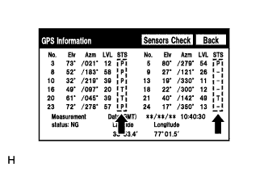

NAVIGATION SYSTEM (for DVD) > GPS Mark is not Displayed |
| 1.CHECK CABIN |
Check the cabin for any object that might interrupt radio reception on the instrument panel. If such an object exists, remove it and check if the GPS mark reappears.
|
| ||||
| OK | ||
| ||
| 2.CHECK SURROUNDINGS |
Check if the vehicle is in a location where GPS signal reception is poor. If the vehicle is in such a place, relocate the vehicle and check if the GPS mark reappears.
| *1 | Example | *2 | In a Tunnel |
| *3 | In a Building | *4 | Under an Overpass |
| *5 | On a Forest or Tree-lined Path | *6 | Between Tall Buildings |
| *7 | Under a Cliff or Overhang | - | - |
|
| ||||
| OK | ||
| ||
| 3.CHECK GPS INFORMATION (NAVIGATION CHECK MODE) |
|  |
Enter the "Navigation Check" mode and select "GPS Information" (Click here).
Check how many of the codes (T or P) appear in the "STS" column.
|
| ||||
| OK | ||
| ||